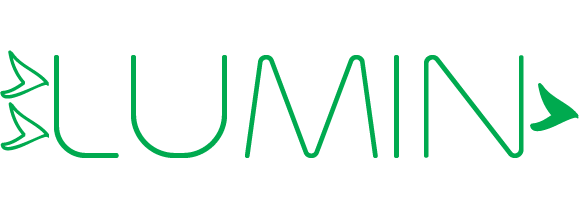
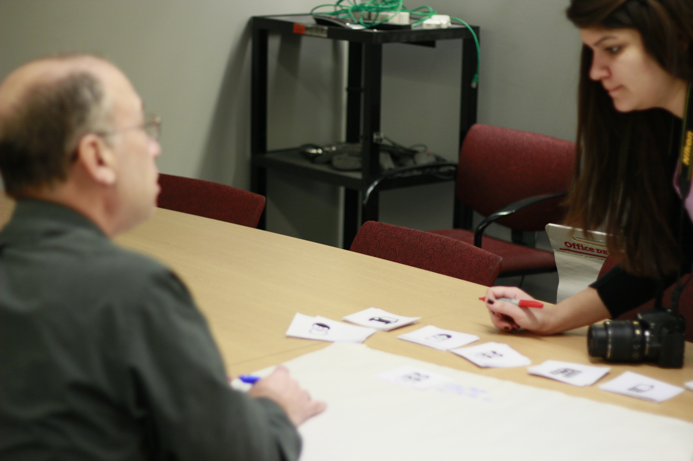
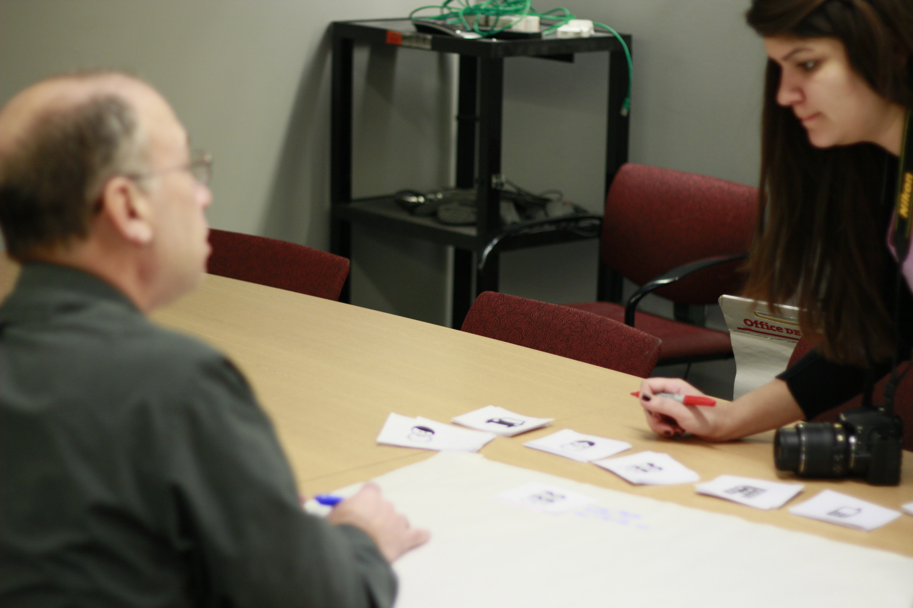

Eaton Capstone Project
Eaton is a power management company, with many different sectors and businesses. Our capstone project focuses on their Switchgear products. Switchgears (in a nutshell) do what fuse boxes do, except on a very large scale. For example, a typical Low Voltage Switchgear can manage the power for an entire university. The Eaton capstone project is an 8-month project that I will be involved in from January to August 2014. My three teammates and I, Team Lumin, are trying to envision how service engineers will interact with power management systems in the next 5, 10, or 15 years. Our goal is to create the future of switchgear-human interaction to enhance the safety, reliability and efficiency of power management systems.

Role Description
My role on the team is to design and finalize the research plan. As a team we will also be collecting data from users, and synthesizing that data to inform our brainstorm for our visioning phase. Additionally, we will have to do rapid prototyping and usability testing in the summer to test our solution.
Process
We began the project by trying to understand and define the scope of this project with our clients at Eaton, and doing extensive background research. The background research includes a comprehensive competitive analysis, and going onsite to see and interact with Eaton Switchgears first hand. Next, we put together our research plan, which we are
currently in the process of implementing. We are employing a
variety of methods including contextual inquiry, interviews,
card sorting, business origami, and more, to get rich data
and a firm understanding of our users’ wants and needs.

In the next steps of the project, we will be synthesizing the
data we collected, and creating models. Afterwards, we’ll
brainstorm and vision three key ideas. In the summer
semester, starting in May, we will be prototyping iteratively
and conducting usability tests.
Next, we put together our research plan, which we are
currently in the process of implementing. We are employing a
variety of methods including contextual inquiry, interviews,
card sorting, business origami, and more, to get rich data
and a firm understanding of our users’ wants and needs.

In the next steps of the project, we will be synthesizing the
data we collected, and creating models. Afterwards, we’ll
brainstorm and vision three key ideas. In the summer
semester, starting in May, we will be prototyping iteratively
and conducting usability tests.
We would like to send a huge thank you to our Eaton sponsors, our faculty mentors-Jason Hong and Skip Shelly, Carnegie Mellon University and the Human Computer Interaction Institute for all of their help in this project.
My teammates are Christi Hagen, Rohan Singh, and Tugrul Yuksel.
This project started in January and will conclude in August 2014.
Back to all projects!